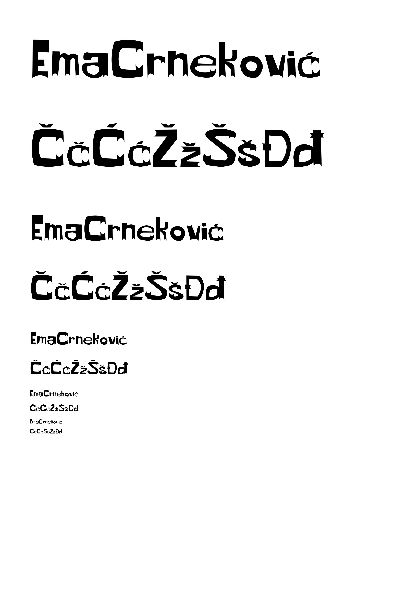
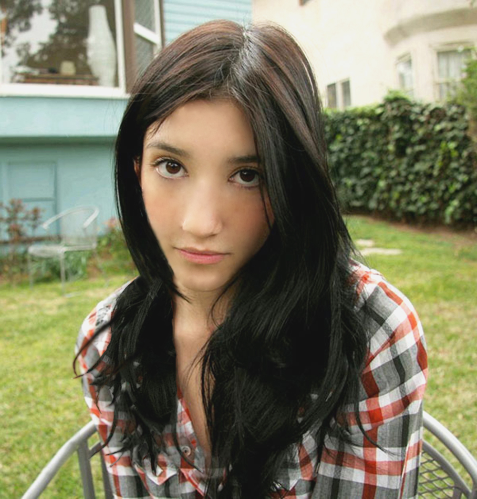
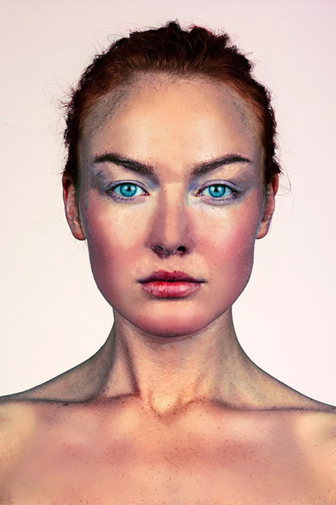
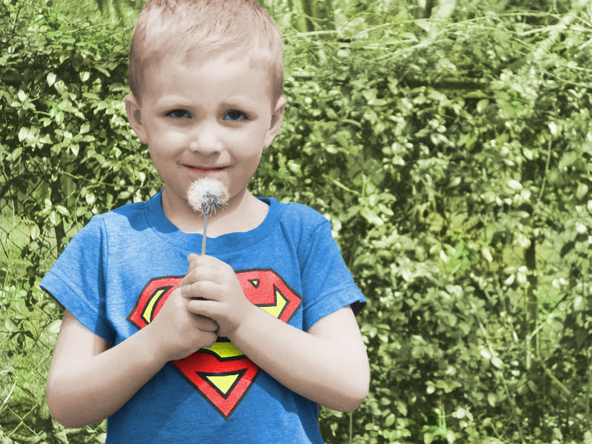
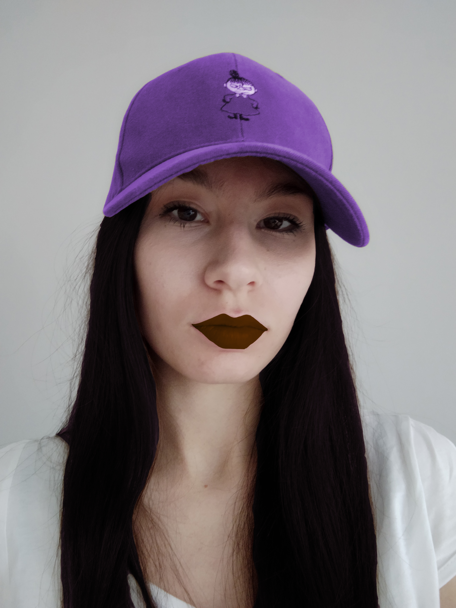
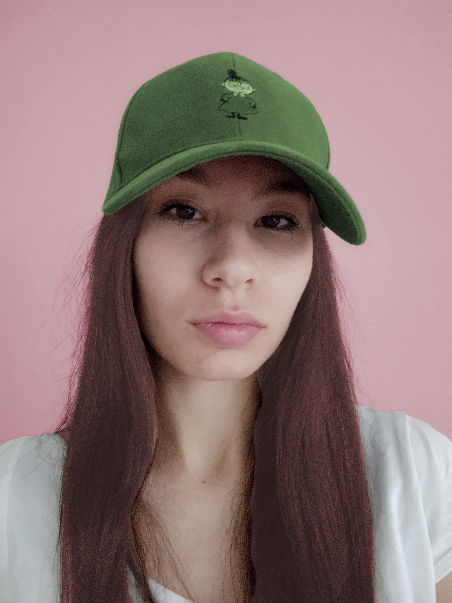
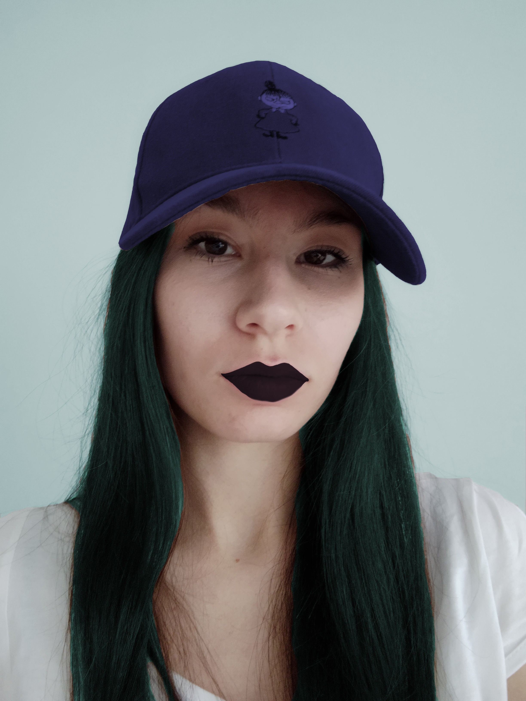
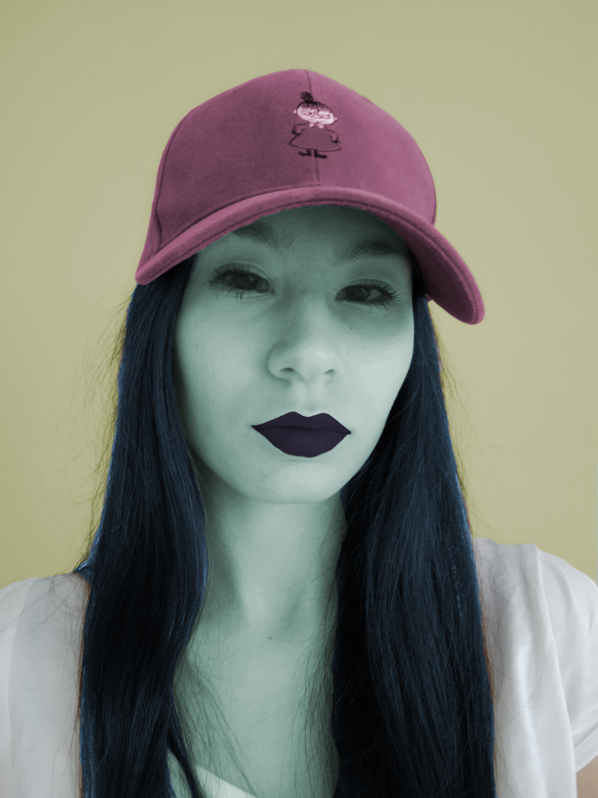
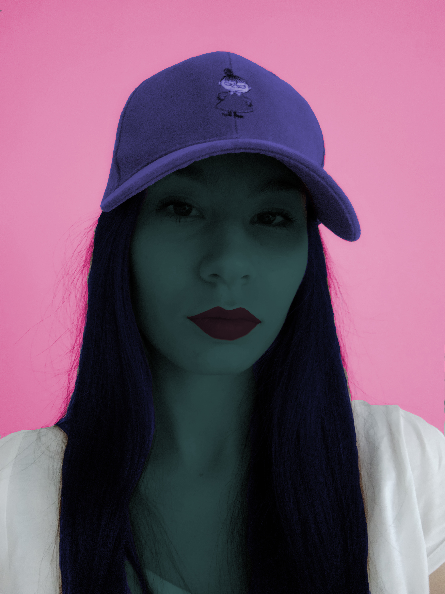
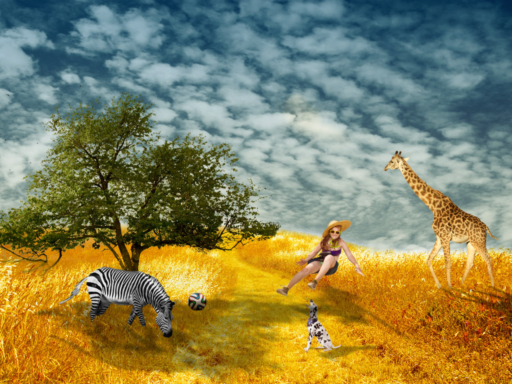

Na ovoj stranici nalaze se jpg i pdf datoteke vježbi koje smo do sad radili na digitalnom multimediju 1.
Izrada vlastitog fonta u FontForge-u uz pomoć pen toola
Korištenje blend mode-a na Beziereovim krivuljama Pdf vježbe
Korištenje rotacija, kopiranja, zrcaljenja i transparencije Pdf vježbe
Korištenje gradijenata i mesh gradijenta
Pdf vježbe kroz video
Pdf vlastitog zadatka
Korištenje do sad naučenih funkcija iz vježbi na jednom formatu unutar teme Flora i fauna podmorja Pdf prvog projektnog zadatka
Retuširanje kloniranjem, spot remove toolom itd.
 Koloriranje iz crno bijelog u boju i primjena koloriranja na vlastitim slikama
     Fotomontaža - izrezivanje,kopiranje i selektiranje iz drugih slika te uskalđivanje sa postojećom slikom sjenama i bojom
Primjena do sad naučenog iz vježbi za pixel grafiku

Kinemagraf - izrezati video, napraviti masku od slike i smanjiti veličinu

Napraviti video od zadanih isječaka, dodati mu efekte i tekst